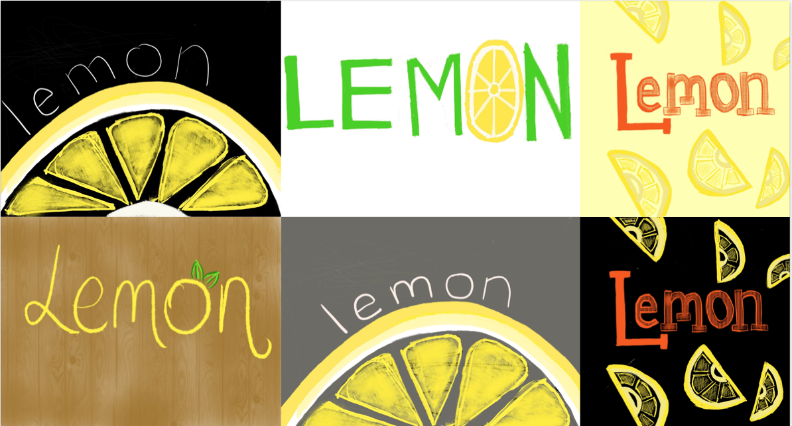

01 Overview
Quick Summary
Ron Kang Chew (Information Systems), Shanice Lam (BArch), Abbey Mui (Information Systems)
8 Weeks, Fall 2019
Sketch, Photoshop, Figma, InDesign, iMovie
Branding + Pitch/Presentation Development + Logo/Mobile Design
Come up with an innovative digital service for your assigned problem space.
This project was part of my Digital Service Innovation class. We were individually tasked with coming up with digital services to tackle current problems. Students were given the opportunity to vote for the ideas that they were most interested in and thus teams were formed to work on the top ideas. The end of the class culminated in an investor pitch and valuation by local Pittsburgh leaders, which served as an invaluable learning experience. For my selected project, I served as a Project Lead - guiding the strategic decisions that my team took. My team focused on the food waste problem.
02 Solution
Introducting Lemon.
A mobile application that tackles personal waste with just one picture of your grocery receipt!

03 Problem Discovery
Today, food waste is an important problem. It has a major financial impact, impacts food security, and affects the climate and resource conservation.
Food that could be used to feed hungry families is instead sent to landfills, eventually adding up to 8% of global greenhouse gas emissions.

Restaurant Interviews
We first started by trying to reducing waste from a restaurant's perspective. A lot of applications are out on the market that focus on this problem - specifically trying to help restaurants give away leftovers at the end of the day.

Before going into interviews, our team did a reverse assumptions exercise to come at the food waste problem from a fresher perspective.


Speaking to restaurant owners, we came up with some fundamental truths:
01 Most restaurants cook on demand, leading to no excess waste at the end of the day
02 If certain restaurants have extra food they often reuse it the next day (this is the case with buffets)
03 Fresh produce must be thrown out by the end of the day (food safety)
04 Restaurants already optimize how much they’re using, based on customer patterns (Saturdays are popular, Thursdays are not)
05 Some restaurants prefer donation because reselling food would require extra time and effort beyond hours of operation
06 Safety or the "freshness" of excess food is an issue
In summary, we found that minimizing waste for restaurants may prove difficult.
04 Pivoting to Personal Waste
From our restaurant interviews, we found that produce is the most wasted type of food, since it goes bad so quickly and cannot be kept due to stringent safety conditions for restaurants.For this reason, we tried to look at produce waste from a different angle: by looking at grocery stores. We contacted local grocery stores, such as Giant Eagle, Aldi, and Trader Joe's and asked about wasted produce and shopper habits.
The responses were overwhelmingly similar across the board. Grocers overstock for the proper look and feel of the store - and with good reason. According to Business Insider, the fundamental business model of supermarkets dictates that:
01 Stores be fully stocked so customers don't run to competitors.
02 Customers expect perfect, identically shaped produce.
03 Thus, retailers must stock according to customer expectations.
Doug Rauch, the former president of Trader Joe's reaffirms this, stating that if a store has low waste numbers, it can be a sign of an unsatisfactory customer experience. Topping that, consumers lead to 92 billion lbs of waste while retailers lead to less than half at 42 billion lbs. With evidence in the numbers, we pivoted
to focus on grocery shoppers and the shopping experience to identify ways to mitigate the food waste problem.

05 Ideation
There are a couple parts to the grocery shopping process.

We spoke to different kinds of grocery shoppers (moms, college students, and working adults) and asked questions on what part of the process made it so difficult to reduce waste and what types of services shoppers wished existed to aid them in this process.

Along with shopper interviews, we also conducted co-design sessions revolving around an artifact - a plate of spoiled food. The goal was to evoke any sentiments associated with the plate and additionally ask questions about interviewee shopping, storage, and consumption habits. We interviewed around 20 candidates and found that almost 80% of candidates had some issue keeping track of their food.

From both rounds of interviewing and discussion, we found that consumers buy too much food, throw it away quickly and pay little attention to waste.

06 Initial Concept
Based on the initial insights, we created a paper prototype of an all encompassing platform - one which tracked expiration dates, gave meal recipes, and also helped plan out grocery shopping by taking account of your vitals (body height, weight, and diet). We took inspiration from several of our current competitors, like Blue Apron and Hello Chef. Most people felt the service was promising, but too all ecompassing/overwhelming as it tried to do too many things at the same time.

07 Iteration
During many of our lectures, we would have in-class critiques from local professionals. From these discussions and our first-hand research, we realized the problem stems from users not understanding expiry dates or when food goes bad. From there, we can tackle a lot of the issues customers face. This is when the idea of Lemon, our new service, was born.

Storyboarding
We decided there were a couple different ways to feed information about grocery purchases into our application: through a picture of the grocery receipt, an in-fridge smart camera, or manual entry. We created storyboards and gauged for reactions. The in-fridge smart camera was a huge privacy concern, while a picture of the receipt was the most well received.

Mobile App Design
We called our application 'Lemon' after the lemons that go bad in your fridge without you even knowing, wasting money and produce.

Video Storyboarding and Production

Logo + Poster Iterations

08 Final Concept
The final concept is a simple digital service tracks food and prevents waste through scanning your grocery receipts. Specifically it can:
01 give reminders to check on produce/track spoilage data
02 recommend grocery proportions for the future
03 give repurposing ideas (DIY cleaners)


09 Demo Day Pitch + Analysis
Our team placed third at the demo day pitch where we presented to leaders in the Pittsburgh community! We pitched our idea as a freemium model with a paid premium product. We presented a pitch deck, video, and poster four times to a total of 20 investors. We received great advice on how to continue expanding our idea, starting with a pricing structure other than a freemium model. The investors loved our branding and how simple yet effective the idea was!

Competitive Analysis

Value Flow Model

PESTLE + POG


10 Reflection + Links
Reflection
This project was rewarding for me because this was the first time I really got to lead a team through the entirety of the project, given that it was all my team members' first times taking an HCI class. I also took charge of branding, logo, and visuals, something I typically shy away from. Doing well at the demo was incredible for me and made me feel that I have really taken my practice to the next level!
Links